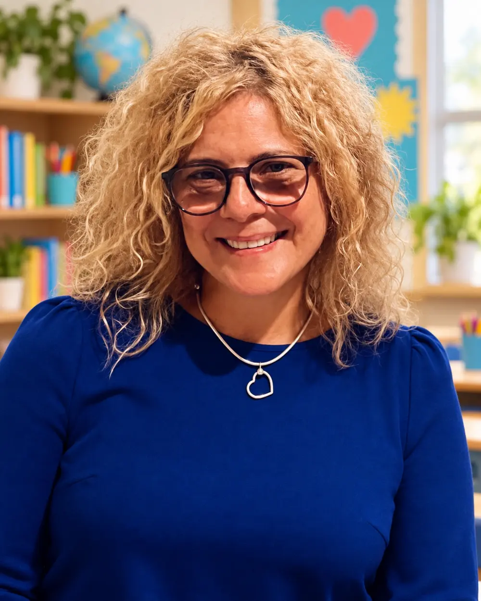
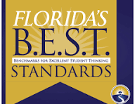
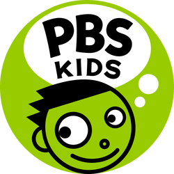
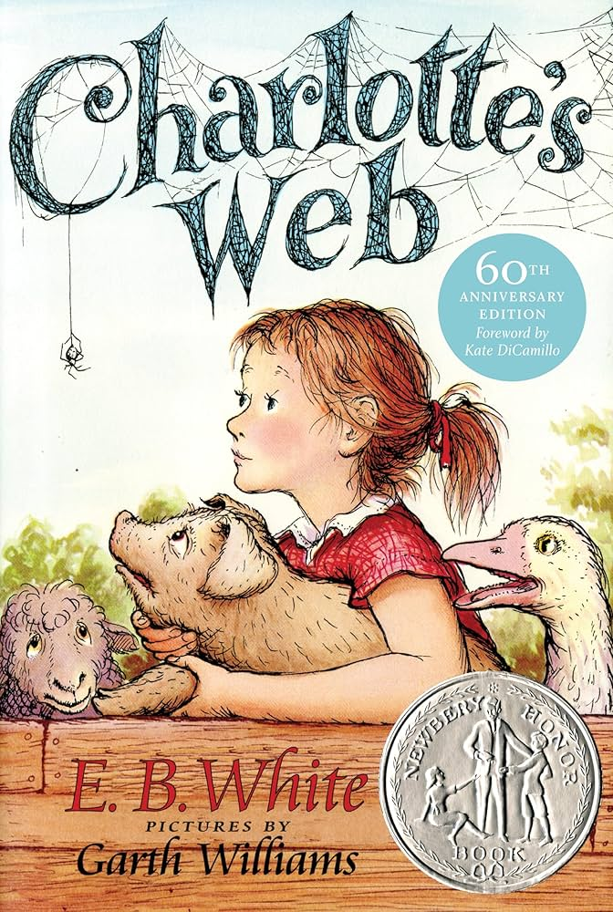
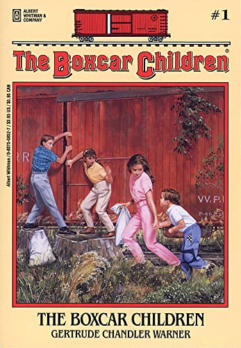
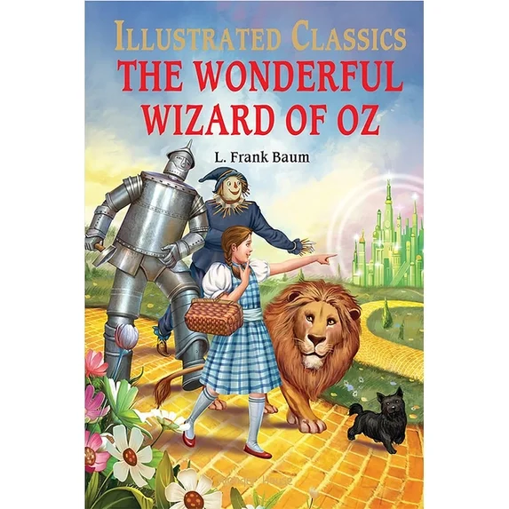
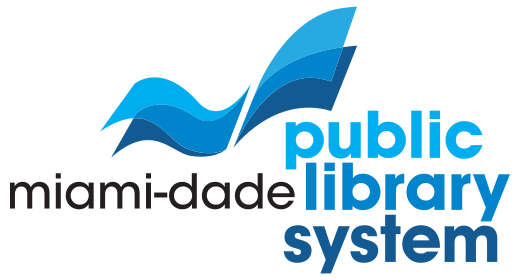

Family guide
FDOE Grade 3 Parent Guide
Review the reading, writing, vocabulary, and communication skills third graders are expected to develop.
View parent guideWelcome, readers and families!
Welcome to Ms. Caro's Literacy Learning Classroom—a cheerful place where families can discover what we are learning, find trusted reading resources, and help children grow at home.
Read with courage
•Write with purpose
•Grow every day
A caring classroom partnership
Get to know the teacher who will be cheering readers on throughout the year.

Hello, families!
My name is Ms. May Caro. I hold an Associate of Arts degree and a bachelor's degree in Early Childhood Education, with a Kindergarten–Grade 3 focus.
My experience includes supporting students from kindergarten through eighth grade, with six years devoted to working with young children with special needs. I am passionate about helping every student become a confident reader and writer.
Outside the classroom, I enjoy:
Small steps in reading can open doors to very big dreams.
Florida learning connections
These trusted guides explain third-grade English Language Arts standards, curriculum, and assessment information in family-friendly language.
Family guide
Review the reading, writing, vocabulary, and communication skills third graders are expected to develop.
View parent guideStandards search
Search Florida benchmarks and explore instructional resources for third-grade English Language Arts.
Open CPALMS
Official benchmarks
Read the complete Benchmarks for Excellent Student Thinking for English Language Arts.
Open standards PDFAssessment support
Learn about the Florida Assessment of Student Thinking and find reports and resources for families.
Visit FASTCore literacy program
Explore the reading, writing, vocabulary, and language program used to build connected literacy skills.
Explore WondersSkills that grow together
Each goal supports children as they become more accurate, expressive, thoughtful, and independent readers and writers.
ELA.3.C.2.1
Present ideas in a logical order using clear pronunciation, appropriate volume, expression, and academic vocabulary.
Foundational review
Review blending, segmenting, and manipulating sounds when extra practice is needed for stronger decoding and spelling.
ELA.3.F.1.3
Decode multisyllabic words and recognize useful prefixes, suffixes, and common Greek and Latin roots.
ELA.3.F.1.4
Read grade-level text accurately, automatically, and with phrasing and expression that support meaning.
112 WCPMSpring oral-reading target ↗ELA.3.V.1.1–1.3
Determine word meanings with context, word parts, reference tools, figurative language, and background knowledge.
ELA.3.R.1–R.3
Explain characters, themes, central ideas, text structures, author’s purpose, claims, and evidence.
ELA.3.C.1.1–1.5
Plan, draft, revise, and edit organized narratives, opinions, and informational texts with meaningful details.
Click • learn • grow
Turn screen time into purposeful practice with these family-friendly literacy resources.
Starfall offers interactive practice with phonics, word recognition, vocabulary, and reading. Families can choose a short activity that matches a child’s needs and then ask the child to read the practiced words in a sentence.
Start learning ↗Storyline Online features children’s books read aloud by professional actors. Families can pause before, during, and after the story to discuss new words, make predictions, describe characters, and identify the message.
Listen together ↗
PBS KIDS provides free games, videos, and activities that develop language, storytelling, vocabulary, and comprehension. Parents can select a literacy activity, play alongside their child, and invite the child to explain what they learned.
Explore activities ↗Stories worth sharing
Read together, talk together, and use these questions to turn every story into a meaningful conversation.

Wilbur, a young pig, forms a special friendship with Charlotte, a clever spider who uses her words to help save him. The story explores friendship, loyalty, kindness, change, and sacrifice.

Henry, Jessie, Violet, and Benny work together to create a home in an abandoned boxcar. Their adventure highlights family, independence, cooperation, responsibility, and problem-solving.

Dorothy travels through the Land of Oz with the Scarecrow, Tin Woodman, and Cowardly Lion. Their journey explores courage, intelligence, love, friendship, and believing in yourself.
Notice the pattern
Our word wall is organized by useful patterns so children can connect spelling, meaning, and decoding strategies.
because • could • would • should • their • there • where • thought • through • enough • know • does
reread • rewrite • preview • unhappy • dislike • return • unable • incorrect • pretest • rebuild
helpful • hopeful • careful • fearless • careless • tallest • fastest • kindness • movement
transport • portable • telephone • telescope • autograph • photograph • recycle • bicycle
important • remember • different • information • understand • wonderful • together • discover • character
Say the word, stretch its sounds, map the sounds to letters, and draw a heart under the unexpected spelling. Then read and write the whole word.
Find a target word while reading. Circle its base word and identify any prefix, suffix, root, or surprising spelling pattern.
Read the word, build it with letter tiles, break it into meaningful parts, write it, and use it in an original sentence.
Reading beyond the classroom
Miami-Dade families can find books, storytimes, learning programs, and support close to home.

Free • Recurring
Families listen to stories, songs, and shared-reading activities at neighborhood branches. Attending builds listening comprehension, oral vocabulary, sequencing, and excitement about books.
Find a storytimeFree • Second Saturday
Museum of Miami offers a free family day each month with exhibits and hands-on activities. Children strengthen background knowledge, ask questions, read exhibit text, and retell what they discovered.
Plan a family dayAlways free
Families can explore exhibitions and discuss what they notice, wonder, and infer. Talking and writing about art develop descriptive vocabulary, observation, evidence-based thinking, and storytelling.
Visit the museumCommunity schedules change. Please check the organization’s current calendar before attending.
A guide for grown-ups
Simple, trusted resources can make reading practice feel more focused—and much more enjoyable.
Try it this week
One small reading moment each day can build vocabulary, fluency, comprehension, and family connection.
Sources behind our learning
Florida Department of Education. (n.d.). Parent guides for English Language Arts.
Florida Department of Education. (2020). Florida B.E.S.T. standards: English Language Arts.
Florida Department of Education. (n.d.). Florida Assessment of Student Thinking: Students & families.
Florida Center for Reading Research. (n.d.). Family resources.
McGraw Hill. (n.d.). Florida Wonders.
Reading Rockets. (n.d.). A new model for teaching high-frequency words.
Hasbrouck, J., & Tindal, G. (2017). Fluency norms chart: 2017 update. Reading Rockets.
University of Florida Literacy Institute. (n.d.). Irregular and high-frequency words.
Starfall Education Foundation. (n.d.). Starfall.
Storyline Online. (n.d.). Storyline Online.
PBS KIDS. (n.d.). PBS KIDS.
Miami-Dade Public Library System. (n.d.). Events.
Museum of Miami. (n.d.). Family Fun Days.
Patricia & Phillip Frost Art Museum. (n.d.). Visitor information.
READy, SET, GO Miami! (n.d.). Early literacy resources for caregivers.